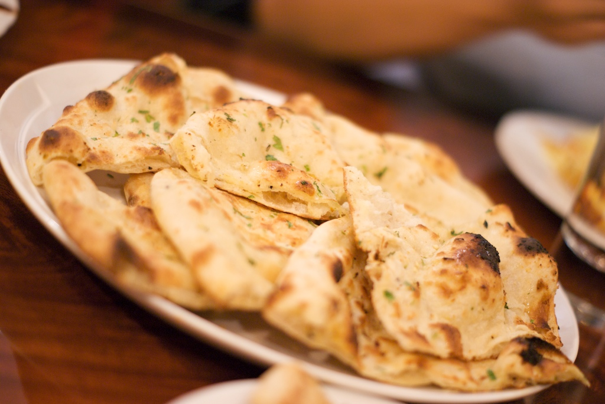

Naan

What is Naan
Naan is a leavened flatbread made in some countries in Asia. These breads are baked in a tandoor (a cylindrical oven made of clay). It is also popular in India and is served in almost all the restaurants here.
Though naan is not made in Indian homes as a staple. It is roti or chapati (unleavened flatbread made from whole wheat flour) that is made on a regular basis.
Naan is such a delish bread that it makes you forget about all-purpose flour.
Ingredients
- 1 (.25 ounce) package active dry yeast
- 1 cup warm water
- ¼ cup white sugar
- 3 tablespoons milk
- 1 large egg, beaten
- 2 teaspoons salt
- 4 ½ cups bread flour
- 2 teaspoons minced garlic (Optional)
- ¼ cup butter, melted
Steps
- Dissolve yeast in warm water in a large bowl. Let stand about 10 minutes, until frothy.
:max_bytes(150000):strip_icc():format(webp)/14565-naan-step1-234-4x3-9558239066f549dfa38cb113a938e2d6.jpg)
- Meanwhile, generously oil a large bowl.
- Stir sugar, milk, egg, and salt into the yeast mixture. Mix in enough flour to make a soft dough.
:max_bytes(150000):strip_icc():format(webp)/14565-naan-step2-236-4x3-2908b76105e248f7b5ca089d736685c9.jpg)
- Knead dough on a lightly floured surface until smooth, 6 to 8 minutes.
:max_bytes(150000):strip_icc():format(webp)/14565-naan-step3-238-4x3-eb96082277414307a8f24e32d2039787.jpg)
- Place dough in the prepared oil, cover with a damp cloth, and let rise until doubled in size, about 1 hour.
:max_bytes(150000):strip_icc():format(webp)/14565-naan-step4-283-4x3-e97749bea385435887d2db3ab21775fb.jpg)
- Punch down dough on a lightly floured surface, and knead in garlic. Pinch off small handfuls of dough about the size of a golf ball; you should have about 14. Roll each piece into a ball and place on a tray. Cover with a towel, and allow to rise until doubled in size, about 30 minutes.
:max_bytes(150000):strip_icc():format(webp)/14565-naan-step5-285-4x3-df62b1215f104618ae849eca924b5a6f.jpg)
- Meanwhile, preheat a large grill pan over high heat.
- Roll each piece of dough into a thin circle.
:max_bytes(150000):strip_icc():format(webp)/14565-naan-step7-302-4x3-f6f505e02685478d8907de1dedda1205.jpg)
- Brush some melted butter on the preheated grill pan. Place a few pieces of dough in the pan (as many as you can fit) and cook until puffy and lightly browned, 2 to 3 minutes. Brush butter onto the uncooked sides, flip, and cook until browned, 2 to 4 more minutes. Remove from the grill and repeat to cook the remaining naan.
- Enjoy!
Return to Homepage